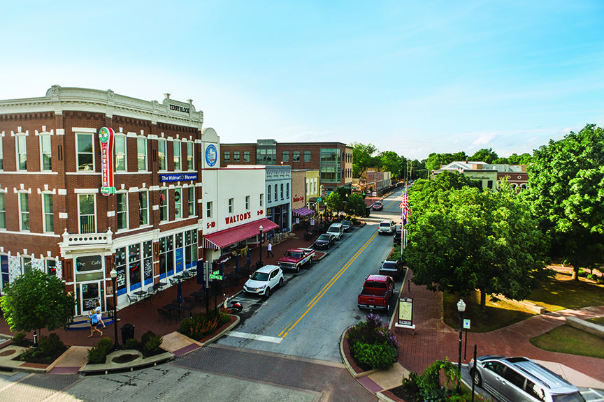

Bentonville
Bentonville, AR

5 important facts of Bentonville
- The population of Bentonville, AR is 56,878 as of 2022
- The city of Bentonville was incorporated as a city in the year of 1905.
- Bentonville is located in the northwest region of Arkansas.
- Bentonville incorporats a blend of urban, suburban, and rural communities throughout its area.
- The average annual salary in Bentonville is $67,079